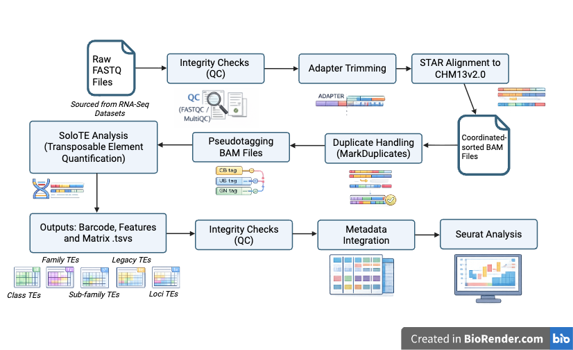
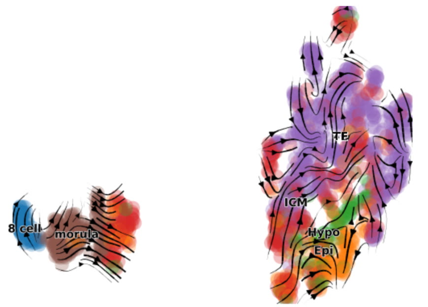
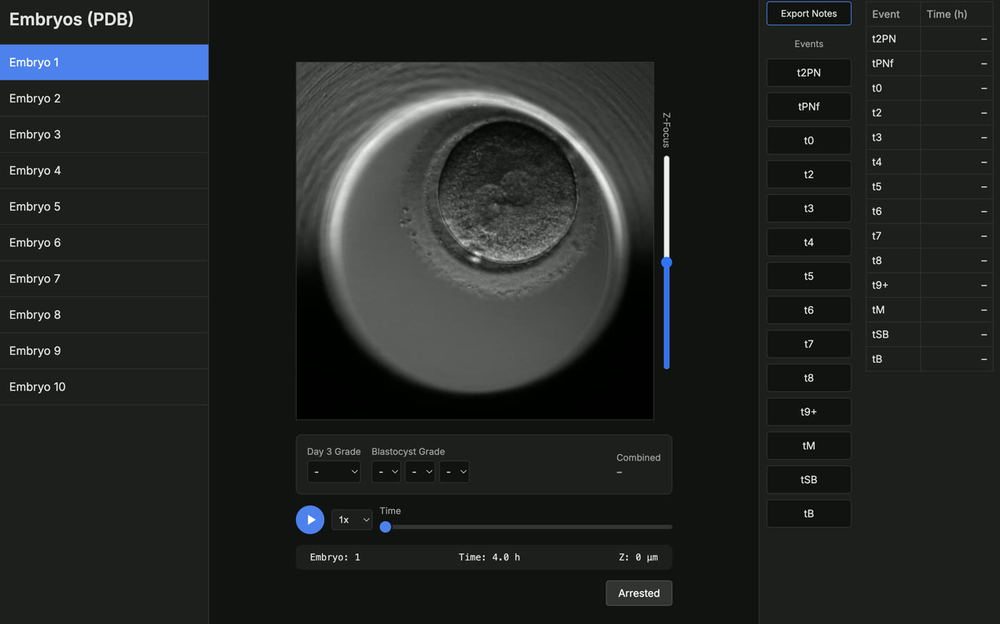
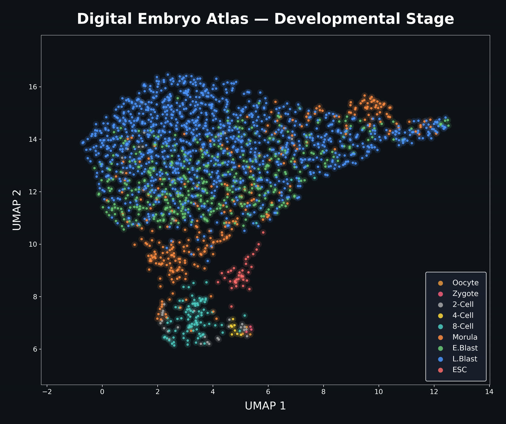
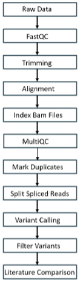

Transcriptomic Signatures of Recurrent Implantation Failure
Carly Keshen, MSc Candidate
Despite advances in IVF, recurrent implantation failure (RIF) remains one of the most frustrating challenges in reproductive medicine. This project uses transcriptomic analysis of endometrial tissue to identify molecular signatures that distinguish RIF patients from fertile controls, with the goal of developing clinically actionable biomarkers. Despite advances in IVF, recurrent implantation failure (RIF) remains one of the most frustrating challenges in reproductive medicine. This project uses transcriptomic analysis of endometrial tissue to identify molecular signatures that distinguish RIF patients from fertile controls, with the goal of developing clinically actionable biomarkers.
Russell SJ et al. Autologous platelet-rich plasma improves the endometrial thickness and live birth rate in patients with recurrent implantation failure. J Assist Reprod Genet, 2022.
e.g. endometrial histology
The Digital Embryo: Predictive Multi-Omic Models
Dr. Stewart Russell, Principal Investigator
The Digital Embryo project aims to construct computational models that integrate multi-omic datasets — transcriptomics, epigenomics, chromatin accessibility — to predict embryo developmental trajectories. By unifying publicly available single-cell data with novel clinical samples, this initiative seeks to build the first comprehensive in silico model of human preimplantation development.
Russell SJ, Zhao C et al. An atlas of small non-coding RNAs in human preimplantation development. Nature Communications, 2024.
e.g. UMAP / pipeline figure
Single-Cell Transcriptomics of Aneuploid Embryo Development
Sheila (Yat Sze) Kwok, PhD Candidate
Aneuploidy is remarkably common in human embryos and a leading cause of implantation failure and pregnancy loss. This project uses single-cell transcriptomics of post-implantation human embryos to understand how aneuploid cells are depleted in mosaic embryos and how lineage dynamics are affected by chromosomal abnormalities.
Kwok SYS, Haham LM, Russell SJ et al. Single-cell transcriptomics of postimplantation embryos: unveiling aneuploidy effects and lineage dynamics. Research Square, 2025.
e.g. blastocyst IF / aneuploidy
Exploring Transposable Elements and Alternative Splicing Events as Drivers of Embryonic Development
Arsh Verma, HBSc Candidate
From a multi-omics perspective, the influence of Transposable Elements (TEs) and alternative splicing events (SEs) on preimplantation embryonic development remains ambiguous. In the Digital Embryo’s initial transcriptomic phase, I will analyze preimplantation single-cell RNA-sequencing datasets to generate reproducible feature matrices outlining TE activity (using SoloTE, a bioinformatics tool) and isoform/splicing dynamics (using Salmon and SUPPA2) across embryos that arrest versus those that develop successfully. The analysis will focus on the most robust and highly expressed TE classes, subfamilies, and loci, as well as key splicing events, helping to strengthen the predictive abilities of the Digital Embryo. Generated matrices containing common TE features and SEs (expressed via Percent Spliced-In values) will undergo quality control and metadata integration to support downstream comparison analysis with literature describing the functional roles of specific TEs and SEs.

RNA Velocity Based Prediction of Embryo Progression and Arrest
Eitan Lenga, HBSc Candidate
I am building a reproducible RNA velocity pipeline for early human embryo single-cell RNA-seq datasets to infer developmental directionality from spliced vs. unspliced transcription. By integrating multiple public embryo datasets on the Nibi cluster, I generate Velocyto loom files and apply scVelo to estimate velocity fields, confidence metrics, and gene-level dynamics. I then compare “typical” developmental trajectories against cleavage-stage arrest phenotypes to identify where transcriptional progression diverges. The goal is to create a standardized workflow that supports cross-dataset comparisons and prioritizes candidate molecular signatures linked to embryo arrest.

Automated Analysis of Embryo Development from Time-Lapse Imaging Using Deep Learning and Interactive Annotation Tools
Eric Chu, HBSc Candidate
My project aims to develop a convolutional neural network (CNN) pipeline for analyzing time-lapse image data of developing embryos. The pipeline will be able to process large image sequences to detect and classify important developmental events using a trained model. To support this pipeline, I have developed an interactive embryo viewer and annotation application to allow researchers to efficiently label key developmental stages and morphological features. The CNN pipeline and genetic data will be combined to create the Digital Embryo.

Building a Multi-Omic Atlas of Human Preimplantation Development and Embryonic Arrest
Matthew Shen, Incoming Freshman at University of Pennsylvania, Neuroscience Candidate
I am building a unified single-cell RNA-seq atlas of human preimplantation embryo development by reprocessing datasets through a standardized pipeline on the Nibi HPC cluster. Each dataset is aligned to the CHM13v2.0 reference genome using STAR, quantified with featureCounts and Salmon, and quality-controlled with BAM-level mitochondrial estimation, preserving high-mito cells that represent the arrest signal under study. By harmonizing metadata and applying consistent normalization across thousands of cells spanning zygote to blastocyst, I create a foundation for cross-dataset comparison of normal developmental trajectories against embryonic arrest. The goal is to classify distinct molecular failure modes and identify candidate regulatory drivers of why over half of IVF embryos fail to develop.

Expressed Genetic Variant Analysis from Bulk RNA-seq in Recurrent Implantation Failure
Emmanuel Arzoumanidis, HBSc Candidate
My project uses bulk endometrial RNA-seq data to identify expressed genetic variants associated with recurrent implantation failure (RIF). I am repurposing these datasets to detect single nucleotide variants and small indels within expressed transcripts. I use a standardized bioinformatics approach to call, filter, annotate, and prioritize variants, then compare them against literature-supported RIF-associated variants. The goal is to determine whether expressed variants in implantation-related pathways may contribute to expression of the RIF-associated phenotype.
